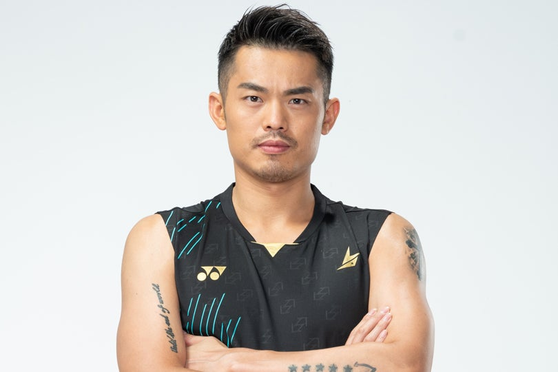

LIN DAN
A Chinese Former Professional Badminton Player
A Chinese Former Professional Badminton Player
Ranked 1st worldwide for 7 years, including a 199-week streak from 2008 to 2012
The Reigning
Men's Singles World Champion
Badminton is a racquet sport played using racquets to hit a shuttlecock across a net. Although it may be played
with larger teams, the most common forms of the game are "singles" (with one player per side) and "doubles"
(with two players per side). Badminton is often played as a casual outdoor activity in a yard or on a beach;
formal games are played on a rectangular indoor court. Points are scored by striking the shuttlecock with the
racquet and landing it within the opposing side's half of the court.
Each side may only strike the shuttlecock once before it passes over the net. Play ends once the shuttlecock has
struck the floor or if a fault has been called by the umpire, service judge, or (in their absence) the opposing
side.
The shuttlecock is a feathered or (in informal matches) plastic projectile which flies differently from the
balls used in many other sports. In particular, the feathers create much higher drag, causing the shuttlecock to
decelerate more rapidly. Shuttlecocks also have a high top speed compared to the balls in other racquet sports.
The flight of the shuttlecock gives the sport its distinctive nature.
The game developed in British India from the earlier game of battledore and shuttlecock. European play came to
be dominated by Denmark but the game has become very popular in Asia, with recent competitions dominated by
China. Since 1992, badminton has been a Summer Olympic sport with four events: men's singles, women's singles,
men's doubles, and women's doubles, with mixed doubles added four years later. At high levels of play, the
sport demands excellent fitness: players require aerobic stamina, agility, strength, speed, and precision. It is
also a technical sport, requiring good motor coordination and the development of sophisticated racquet
movements.